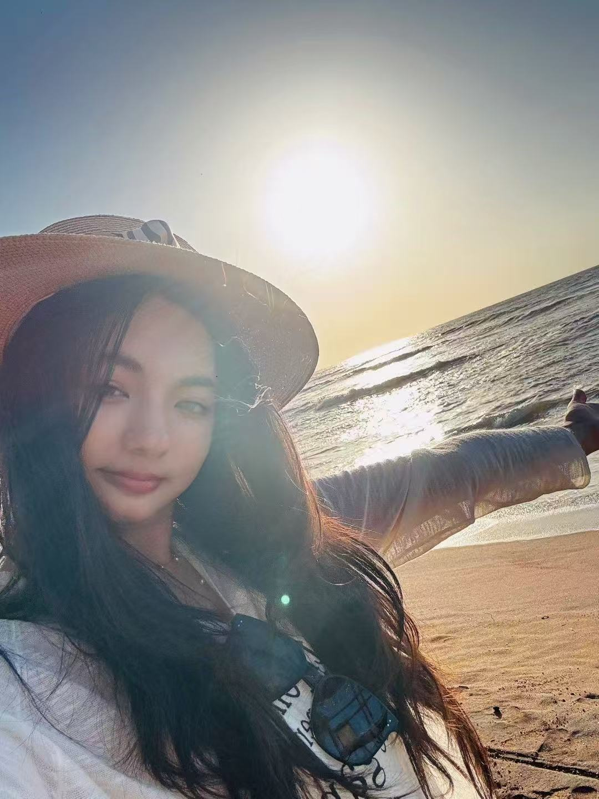
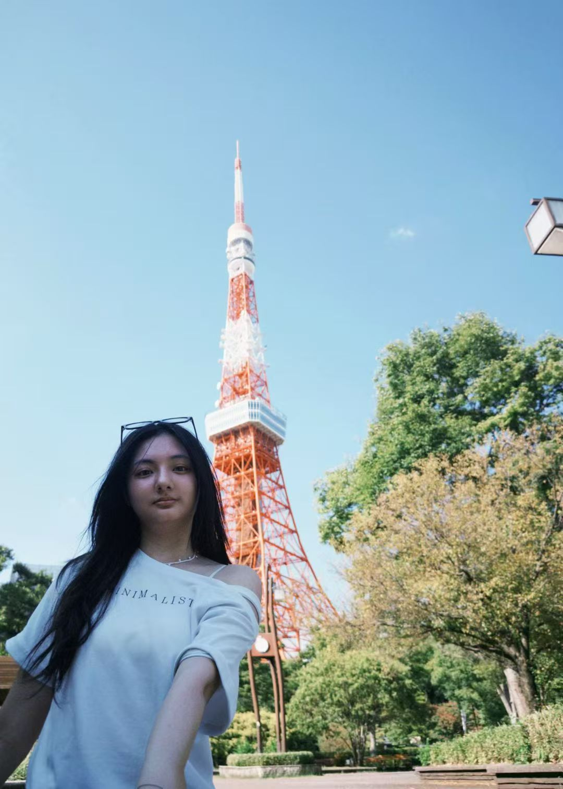
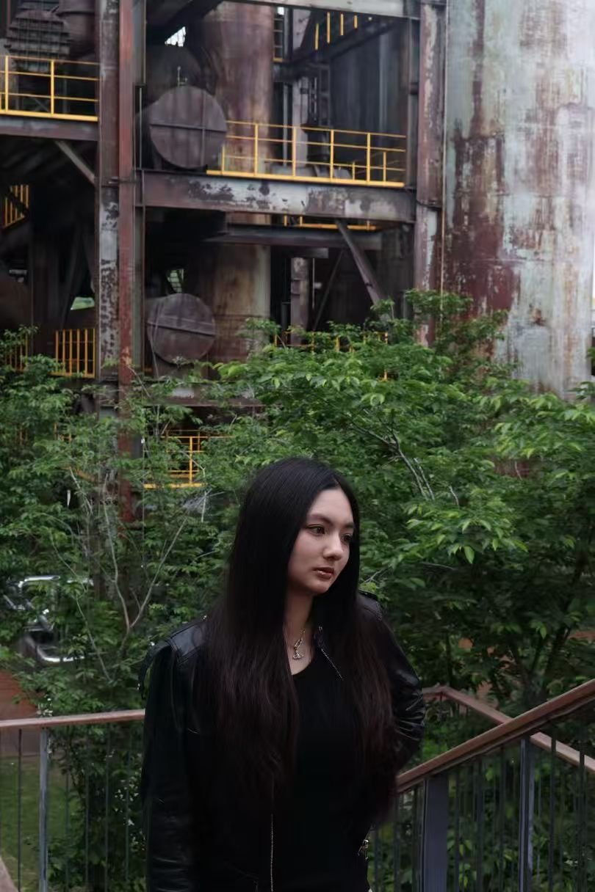
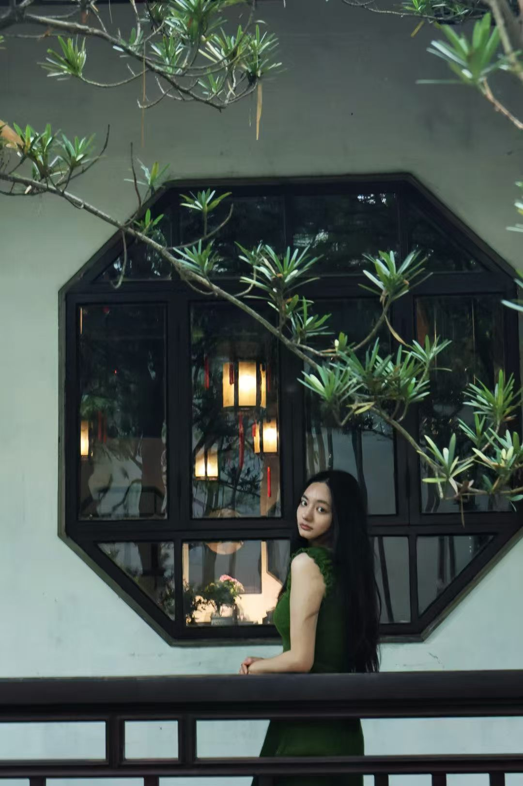

旅行




随笔
山水之哲
于 2026 年秋
水边的哲学是不舍昼夜，山地的哲学是不知日月。
水边的哲学是不舍昼夜，山地的哲学是不知日月。
阅读全文 ↓
流浪的本性
于巴塞罗那的梦中
“流浪的本性：不在乎脚下，只在乎远方。”巴塞之所以能成为我的梦城大概就是因为...
“流浪的本性：不在乎脚下，只在乎远方。”巴塞之所以能成为我的梦城大概就是因为，那里不仅有高迪，也有世界上最著名的流浪者。如果可以，我希望我的灵魂可以一直在流浪，于山川，于河流。
阅读全文 ↓